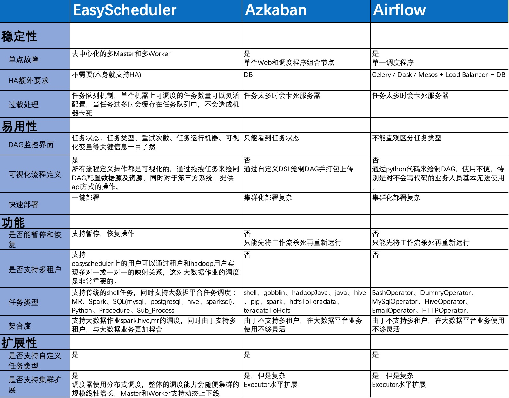

简介
导语
EasyScheduler是易观研发的大数据分布式工作流调度系统。主要解决数据研发ETL错综复杂的依赖关系，而不能直观监控任务健康状态等问题。EasyScheduler通过可视化拖拽任务节点的方式形成DAG(有向无环图)流程图，在运行过程中可实时监控任务的运行状态，同时支持重试、从指定节点恢复失败、暂停及Kill任务、任务运行历史查看等等操作。
背景
工作流调度系统在大数据平台中是一个核心的基础设施，是大数据开发必不可少的重要组成部分。由于数据处理流程常常具有很长的依赖链条，因此依赖单机的crontab等单纯依赖时间调度的方式，往往存在很大的弊端，如依赖不清晰，出错难以查找等问题。因此，我们调研了市面上流行的调度系统。 并和azkaban、airflow做了一些对比：

鉴于易观日处理数据30TB，复杂的ETL依赖关系，我们开发了EasyScheduler。
EasyScheduler由在工作流调度方面工作多年的几位小伙伴研发而成，致力于成为大数据平台的中流砥柱，使调度变得更加容易，更可以从其中文名“易调度”看出我们的初衷，如果你对目前市面上的调度不够满意，非常欢迎试用易调度，欢迎大家加入进来，提出需求，也欢迎贡献代码， 感兴趣的伙伴们可以加我们微信：510570367，一起加入EasyScheduler吧，多多交流！
系统部分截图：